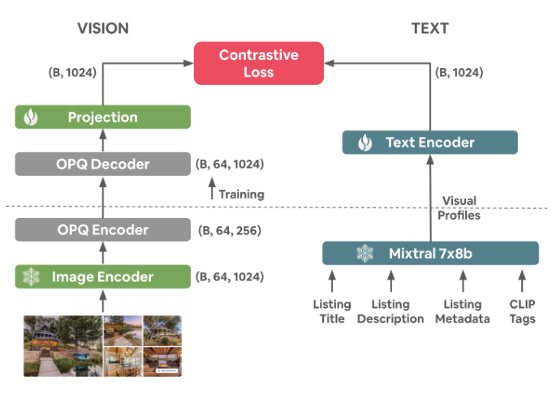

BiListing: Modality Alignment for Listings (房源双模态对齐)
- 会议/期刊: CIKM 2025 (Applied Research Track)
- 作者与机构: Guillaume Guy, Mihajlo Grbovic, Chun How Tan, Han Zhao (Airbnb)
- 推荐链路定位: 召回（房源表征与语义检索）+ 精排特征
- 研究方向: 多模态推荐 / 冷启动推荐
- 论文原文: https://arxiv.org/abs/2508.20396v2
- 开源代码: 暂未开源
TL;DR (1分钟核心速览)
Airbnb 房源天然是"多图 + 多段非结构化文本"的复杂实体，而 CLIP 只处理 1:1 图文对、文本上下文仅 77 token，直接套用会导致多图多文本无法收敛为单一表征，业界常用的 embedding 平均池化又会丢失主导性信息。本文提出 BiListing：用 LLM 将标题/描述/位置/视觉检测标签等异构信号蒸馏为"视觉画像"文本，再用 PhotoSet Transformer 把最多 64 张图聚合成单一视觉向量，以 SigLIP 损失做双塔对齐。离线 10k 留出集上 Text→Image Recall@1 达 58%、Mean Rank 6.2；线上 A/B 中 NDCG +0.425%、Uncancelled Bookers 显著提升（\(p=0.025\)），年增收数千万美元。
Background & Motivation (背景与核心矛盾)
- 主流范式: Airbnb 历史上依赖用户行为序列（点击/收藏/预订）训练房源 embedding（Grbovic et al.），文本与图片仅作辅助特征；表征学习兴起后，业界转向对每张图、每段文本单独编码再拼接或平均。
- 前人局限: 其一，CLIP 的图文对是 1:1 假设，而房源有 60+ 张图与标题/描述/评论等多段文本，自由文本查询（如"带热水浴缸和桑拿的林中木屋"）涉及多个分散在不同图片中的属性，单图匹配必然失效；其二，CLIP 文本塔上下文仅 77 token 且面向"a photo of {}"式短 caption 预训练，与房源长描述、非前置信息的分布严重错配。
- 核心洞察 (Key Insight): 房东上传的文本与照片并非随机关联——房东会刻意用文字强调照片中的材质、景观、氛围等视觉显著点。因此无需额外标注，可直接把"文本描述"当作"多图集合"的弱监督配对信号，把房源理解重构为集合级模态对齐问题。
- 本文切入点: 用 LLM 把异构文本蒸馏成"只含视觉要素"的视觉画像，再用 Transformer 把图片集合编码为一个 token 序列，从而把 CLIP 的 1:1 对齐范式推广到 N:M 实体级对齐。
Method (核心方法设计)
1. 整体框架 (Overall Architecture)
离线侧，房源的结构化字段、标题描述、位置、CLIP 隐式视觉标签、目标检测/分类得到的视觉设施标签与视觉评分被送入 Mixtral 8x7b（zero-shot、step-by-step prompt、预填 "A N bedroom, M bathroom"），生成一段稠密"视觉画像"文本；图片侧先用冻结的 CLIP 图像塔逐图编码，经 OPQ 压缩后送入 4 层 4 头的 PhotoSet Transformer 聚合为单一视觉向量。两塔在共享隐空间内以 SigLIP 损失对齐，训练分"粗对齐（冻结文本塔）+ 精对齐（解冻文本塔末 5 层）"两阶段。线上仅用视觉塔向量，经 PCA 降至 40 维并做 8-bit 标量量化，作为精排模型特征。
flowchart TD
A["房源多源文本: 标题/描述/位置/视觉标签/设施检测"] --> B["LLM 蒸馏为视觉画像"]
C["最多 64 张房源图片"] --> D["CLIP 图像塔 + OPQ 压缩"]
D --> E["PhotoSet Transformer 聚合"]
B --> F["CLIP 文本塔"]
E --> G["SigLIP 双塔对齐"]
F --> G
G --> H["PCA 40 维 + 8-bit 量化 → 精排特征 / FAISS 语义检索"]
2. 关键设计拆解 (Key Designs)
-
视觉画像 (Visual Profiles)：把异构文本压成"可被照片看见"的句子：痛点是房源文本含空调、周边 POI 等不可见属性，会污染图文对齐；且原始描述过长、非前置。做法是用 LLM 将标题、描述、位置、CLIP 隐式标签、100+ 视觉检测设施、视觉评分与房源类别融合重写为一段只保留视觉显著点的短文本，并用正则后处理（如 "0 bedroom" → "studio"）。直觉上，这让文本塔的输入分布贴近 CLIP 预训练的 caption 形态，同时天然过滤掉与图像无关的噪声监督。
-
PhotoSet Transformer：把图片集合当"句子"、把图向量当"token"：痛点是平均池化会让 60 张图中占多数的后院照淹没客厅照，主导性信息丢失。做法是把 \(P\)张图的 CLIP 向量\(\{\boldsymbol{v}_1,\dots,\boldsymbol{v}_P\}\) 加位置编码后送入 Transformer 编码器，取末位 token 的输出作为房源视觉表征：
位置编码并非装饰：房东习惯把最重要的照片放前面、周边环境放最后，位置信息本身携带显著性先验。损失从 InfoNCE 换成 SigLIP（sigmoid 配对损失，无需全局 softmax 归一化），在大 batch（32k）下梯度更稳定，是消融中收益最大的单项改动。
- 训练目标、负采样与推理效率：总损失即对称的 SigLIP 图文配对损失，负样本全部来自 in-batch（global batch 32k），无需显式难负采样。工程侧的关键是带宽：OPQ（256 中心、1280 维旋转矩阵）把每张图向量压到 256 uint8，体积缩减 97%、L2 误差仅 9.9%；线上再对房源向量做 PCA 至 40 维 + 8-bit 标量量化，最终每房源仅 40 字节，可支撑实时打分与 FAISS 近邻检索。
Experimental Setup & Evaluation Protocol (实验设置与评估协议)
- 数据集与预处理: 训练/评测集来自 Airbnb 全量房源（千万量级），经三重过滤后规模缩减 35%：
| 数据集 | #Users | #Items | #Interactions | 稀疏度/密度 | 特征/场景说明 |
|---|---|---|---|---|---|
| Airbnb Listings (train) | — | 千万级 | 图文对（无人工标签） | — | 过滤：<5 张图、视觉画像 <50 字符、预训练模型对齐分 <0.3 |
| Holdout (eval) | — | 1% 随机留出 | — | — | 检索评测取其中 10k 房源采样 |
| 下游 kNN 探针 | — | 同上 | — | — | 结构化字段/房源类别分类准确率 |
- 数据划分与防穿越 (Splitting Strategy): 随机 1% 房源作 holdout，与训练集房源级隔离；下游探针在训练集上拟合、holdout 上评测。
- 排名评测协议 (Ranking Protocol): 检索侧为 Full-Ranking（在留出集全库内对正确配对排序），报告 Mean Rank 与 Recall@{1,5,10}；排序侧离线用二值相关性（是否预订）的 NDCB，线上用 A/B 的 Uncanceled Bookers。
- 对比基线与超参设置: 基线含 MLP 聚合 + InfoNCE、不同层数/头数的 PhotoSet Transformer、InfoNCE vs. SigLIP、有无粗对齐；下游对比产线 Legacy 行为序列 embedding。Embedding 维度 \(d=1024\)，PhotoSet 最优配置 4 层 4 头，粗对齐 140 epoch（lr\(1e^{-4}\)）、精对齐 80 epoch（lr\(2e^{-5}\)），8×A100 训练 15 小时。
Key Experimental Results (实验关键数据)
1. 主实验对比 (Main Results)
检索对齐（留出集，Mean Rank 越低越好）：
| 模型配置 | 损失 | MR (T→I) | 相对最优 |
|---|---|---|---|
| MLP 聚合 (baseline) | InfoNCE | 26.5 | +329% |
| PS Trans (4L, 8H)，无粗对齐 | InfoNCE | 20.2 | +227% |
| PS Trans (8L, 8H)，无粗对齐 | InfoNCE | 20.5 | +232% |
| PS Trans (4L, 8H)，无粗对齐 | SigLIP | 8.43 | +36.6% |
| PS Trans (4L, 4H) + 粗对齐 | SigLIP | 6.17 | — |
最优模型完整指标：Recall@1/5/10 (T→I) = 58% / 85% / 91%，MR (I→T) = 6.0。
下游 kNN 探针（准确率，节选）：
| 属性 | BiListing (vision) | Legacy | 说明 |
|---|---|---|---|
| Urban/Rural Density | 0.64 | 0.41 | 视觉强相关，+56% |
| Space Type | 0.62 | 0.46 | +35% |
| Bathroom count | 0.75 | 0.72 | 小幅领先 |
| A-Frame 类别 | 0.87 | 0.80 | 类别识别全面领先 |
| Pool 类别 | 0.88 | 0.81 | — |
| Pro Host (Y/N) | 0.655 | 0.74 | 行为信号占优 |
| Bookings count | 0.26 | 0.56 | 行为信号占优 |
2. 消融实验 (Ablation Study)
| 消融项 | 设置 | 结果 | 结论 |
|---|---|---|---|
| 图向量量化 | PQ vs. OPQ (P50 L2 误差) | 20.93 vs. 9.49 | OPQ 随机旋转降误差 54.7% |
| 对齐损失 | InfoNCE vs. SigLIP | 20.2 vs. 8.43 | 单项最大收益 |
| 训练策略 | 无粗对齐 vs. 有粗对齐 | 8.43 vs. 6.17 | 两阶段训练再降 27% |
| 聚合器 | MLP vs. PhotoSet Trans | 26.5 vs. 20.2 | 集合建模优于池化 |
| 线上维度 | PCA 前 \(n\) 维 | 40 维后收益饱和 | 最终 40 维 + 8-bit |
3. 关键实验发现 (Key Findings)
- 损失函数是最大杠杆：从 InfoNCE 换到 SigLIP 使 MR 从 20.2 骤降至 8.43（降幅 58%），远超换聚合器（26.5→20.2）的收益，说明大 batch 下 sigmoid 配对损失避免了 softmax 在 32k 候选上的梯度稀释。
- 视觉与行为信号呈清晰互补而非替代：BiListing 在 Urban/Rural（0.64 vs. 0.41）、Space Type（0.62 vs. 0.46）等视觉属性上大幅领先，但在 Bookings count（0.26 vs. 0.56）、Review count（0.37 vs. 0.64）等行为属性上明显落后——这恰好解释了为何线上是把视觉向量作为精排附加特征而非替换行为 embedding。
- 压缩几乎无损：OPQ 在体积缩减 97% 的同时仅损失 9.9% L2 误差，PCA 40 维 + 8-bit 量化后线上 NDCG 无统计显著下降，最终 40 字节/房源的表征仍带来 +0.425% NDCG（超过 +0.3% 的显著性门槛），证明工业部署的瓶颈在带宽而非精度。
Highlights & Limitations (亮点、对比与审稿批判)
- 与代表作对比 (vs. Prior Work): 相比 CLIP/BLIP 的 1:1 图文对假设，本文首次把对齐范式推广到 N:M 实体；相比 Flamingo 类交错多模态大模型（仅支持约 5 张图、解码器架构重），PhotoSet Transformer 支持 64 图且保持 BERT 级编码器延迟；相比 Grbovic et al. 的行为序列 embedding，本文彻底摆脱对曝光日志的依赖，天然缓解冷启动且支持自然语言检索。
- 可迁移亮点: ①"用 LLM 把异构元数据蒸馏为与目标模态同构的文本"这一招可直接迁移到电商商品、短视频等多源属性场景；②"粗对齐冻结文本塔 + 精对齐解冻末几层"的两阶段策略，是低资源下稳定微调 CLIP 双塔的通用配方。
- 审稿级局限批判: 其一，视觉画像由 LLM 生成，其幻觉与风格偏差会作为监督信号被固化进 embedding，论文未做 LLM 选型消融（作者亦在 Future Work 中承认）；其二，检索评测仅在自建留出集上做 Full-Ranking，缺少与公开多模态检索基准的横向对比，且下游 kNN 探针的绝对准确率普遍偏低（如 ADR percentile 仅 0.29），外部可复现性受限。
Rating (四维评分)
- 方法创新性 (Novelty): ⭐⭐⭐⭐ （把 CLIP 1:1 对齐推广到多图多文本实体，PhotoSet Transformer + 视觉画像的组合在工业场景中确属首创，但单点技术均为已有模块的巧妙拼装）
- 评估协议与实验扎实度 (Protocol & Experiments): ⭐⭐⭐⭐ （离线 Full-Ranking + 下游探针 + 线上 A/B 三层验证完整，且有显著性检验；扣分在于无公开基准对比、无 LLM 选型消融）
- 写作与数学规范度 (Clarity & Rigor): ⭐⭐⭐⭐ （伪代码与训练超参披露详尽、可复现性强，但公式化程度偏弱，多数设计以文字描述而非数学形式给出）
- 工业落地与复现价值 (Industrial & Practical Value): ⭐⭐⭐⭐⭐ （已全量上线、40 字节/房源、年增收数千万美元，且论文以"易复现"为明确写作目标，工程参考价值极高）